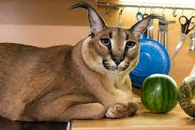

| Порода моих котов | Про породу | Фото |
|---|---|---|
| британский кот | британский кот | |
| каракал | каракал |  |
Содержание cайта

Большой Шлёпа (также известен как просто Шлёпа или Большой русский кот) — серия интернет-мемов с каракалом по кличке Гоша. В англоязычном сегменте Интернета распространено прозвище Floppa или Big Floppa.
Настоящая кличка каракала — Гоша. Он родился 21 декабря 2017 года в киевском кошачьем питомнике. В возрасте четырёх месяцев за 8000 долларов его приобрела семья Бондаревых — Андрей и Елена — из Москвы. По воспоминаниям Елены, в питомнике у Гоши было другое имя — скорее всего, Миша. У каракала есть родная сестра, которая также живёт в столице. Кроме каракала в семье Бондаревых живет мейн-кун Жора, родившийся в 2015 или 2016 году. До недавнего времени вместе с ними жил кот Матвей. Он был взят из приюта в начале 2010-х годов. 24 сентября 2022 года Матвея не стало. Гоша страдает ожирением — его масса составляет около 30 килограммов, питается сырым мясом (индейки, кролики), кормовыми крысам] и креветками в виде лакомства. На питание котов в месяц уходит в среднем 300 долларов. Осенью 2021 года семья задумалась о переезде в Тульскую область, так как содержать каракала в квартире, как говорит Елена Бондарева, «неплохо, но неправильно». Начало постройки дома запланировано на весну 2022 года.
Британская короткошёрстная кошка — порода домашней кошки. По одной версии является потомком породы Шартрез, а по другой, римских кошек и местных сородичей.
Голова — круглая и с хорошо развитыми щеками, широкая в скулах, которые подчеркивают её круглую форму. Шея — короткая, толстая. Нос — короткий, широкий, прямой. В профиль круглый лоб переходит в короткий, прямой нос (переход должен быть не очень явным, но заметным). Подбородок — сильный, ровный. Нос и подбородок составляют вертикаль. Уши — маленькие, закруглённые, низко и широко посажены. Глаза — большие, круглые, широко открытые, широко посаженные. Обычно яркого оранжевого цвета. Пойнтовые коты имеют голубые глаза. Шиншиллы — от голубого, лавандового до изумрудно зелёного. Тело — приземистое, типа «кобби» (cobby), спина прямая, короткая. Грудь широкая. Плечи широкие, массивные Ноги и лапы — ноги короткие, толстые, лапы — круглые, сильные, плотные. Хвост — толстый, средней длины, закруглённый на конце, широкий в основании. Шерсть — короткая, густая, блестящая, плотная, тонкой текстуры, не прилегающая, с густым подшёрстком. Слишком мягкая шерсть или слишком длинная или плотно прилегающая — недостаток. Порода «британская вислоухая» не существует. Существует «британская короткошёрстная (длинношёрстная)» и «шотландская вислоухая (прямо-ухая)».
Британский кот
Каракал